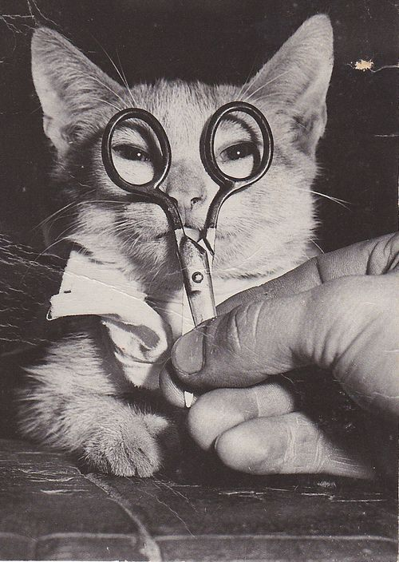

Fur Wars: Paws and Claws Battle Royale - Cats vs. Dogs Edition


Wisdom Okutepa: “I think Cats Are Better Than Dogs and here is why I think so”
Independence and Low-maintenance:
Cats are known for their low-maintenance temperament and independence, making them an appealing choice for many pet owners. Cats are more independent and can adapt to a range of living settings than dogs, who need continual care and daily walks. People with busy schedules or those looking for a less demanding pet care experience find that they can amuse themselves and are content to spend time alone particularly appealing.

Practical Benefits of Pest Control:
Cats help to manage pests in homes, which is a useful service. Their innate hunting instincts enable them to repel rodents and insects, giving homeowners a practical edge. Cats are wonderful additions to houses due to this natural pest control feature that helps keep a clean and hygienic living environment.

Stress reduction and presence of tranquility:
Through their calming presence, cats have a unique ability to lower anxiety and tension. It has been established that caressing a cat causes the release of endorphins, which lowers stress levels in people. The relaxing effect of cats' quiet purring and friendly demeanor helps to promote mental health. The presence of a cat in a person's house can be incredibly reassuring and rewarding for those looking for emotional support and a sense of calmness.